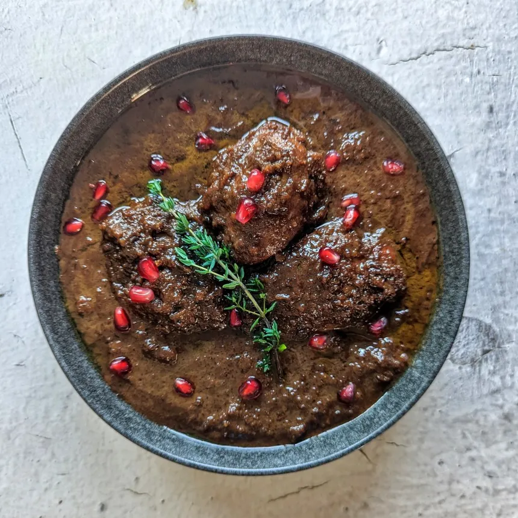

Description
Ingredients:
- 8 duck legs
- salt and freshly ground black pepper to taste
- 2 tablespoons vegetable oil
- ¼ cup water, or as needed
- 3 tablespoons olive oil, or more to taste
- 2 cups diced yellow onion
- 1 teaspoon ground turmeric
- ½ teaspoon ground cinnamon
- ⅛ teaspoon ground nutmeg
- 6 cups chicken broth, or more as needed
- ⅔ cup pomegranate molasses
- ¼ cup honey
- 3 cups walnut halves
Steps:
- Season duck legs all over with salt and pepper.
- Heat vegetable oil in a large skillet over high heat. Place duck legs, skin-side down, in hot oil and cook until browned, 2 to 5 minutes. Turn and cook until browned on the other side, 2 to 4 minutes. Transfer legs to a plate; pour rendered duck fat into a bowl.
- Pour water into the skillet and bring to a boil while scraping the browned bits of food off of the bottom of the pan with a wooden spoon. Remove from the heat.
- Place about 2 tablespoons duck fat into a Dutch oven; add olive oil and heat over medium heat until hot. Add onion and sauté until golden brown, 7 to 10 minutes. Add turmeric, cinnamon, and nutmeg; cook and stir until fragrant, 1 minute.
- Pour chicken broth, pomegranate molasses, honey, and reserved water mixture from the skillet into the Dutch oven; bring to a simmer.
- Meanwhile, grind walnuts to a fine powder in a food processor.
- Cook and stir ground walnuts in a dry skillet over medium heat until fragrant, 2 to 3 minutes; stir into broth mixture.
- Place duck legs into broth and press gently to submerge. Reduce the heat and simmer until duck legs are no longer pink at the bone and the juices run clear, 3 to 4 hours. An instant-read thermometer inserted near the bone should read 165 degrees F (74 degrees C).
- Bring broth to a boil; cook until reduced and desired sauce consistency is reached. Season with salt. Ladle sauce over duck legs to serve.
That's it! You are done. Now your Fesenjoon should be ready to eat :)